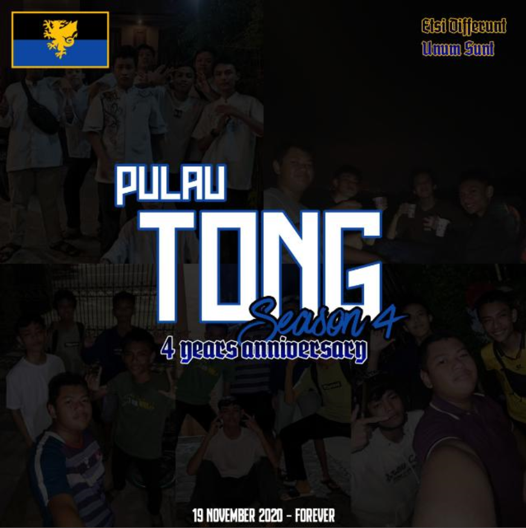
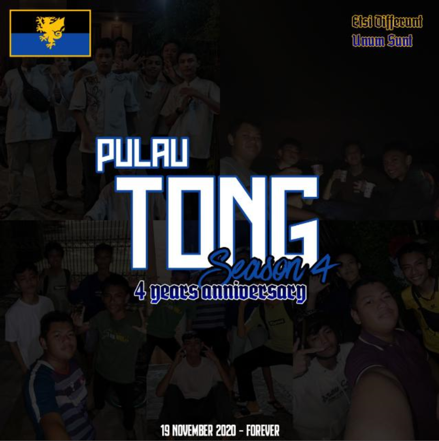

 0813-9095-1298
0851-5656-8679
0851-7956-2922
0895-1376-5923
0822-6039-7399
0812-3151-9827
0858-5055-7658
0823-4219-3971
0859-4293-5078
0856-4830-2986
0856-4894-0617
0813-9095-1298
0851-5656-8679
0851-7956-2922
0895-1376-5923
0822-6039-7399
0812-3151-9827
0858-5055-7658
0823-4219-3971
0859-4293-5078
0856-4830-2986
0856-4894-0617
* Grup Pulau Tong (Ver. Original) 19 Nov 2020 - Lost Media ☠.
* Grup Pulau Tong 2 (Chapter 2) 21 Dec 2020 - berubah nama jadi "Alumni 6A Kadsabo 2020" sebelum bubar.
* Grup Pulau Tong 3 25 Dec 2020 - berubah nama jadi P sebelum bubar.
* Grup Pulau Tong S4 10 Jan 2021 - grup terakhir yang didirikan. (Meskipun ini grup Pulau Tong terakhir, namun grup ini pernah terpecah sampai 8 kali ☠)
Grup Pecahan Pulau Tong
* Alumni Kelas A - Grup saingan "Alumni 6A Kadsabo 2020" / Pulau Tong CHAPTER 2 yang didirikan Rayhan, masih awet sampai kini.
* Jangan Lupa Bernyanyi - Grup khusus untuk berfantasi. Tercatat hanya 4 orang yang pernah merasakan grup ini.
* Jangan Lupa Bernyanyi V2 - Pecahan dari Jangan Lupa Bernyanyi, disini anggota grup berkurang 1, dan tidak digantikan oleh siapapun sehingga eksklusivitas grup ini masih terjaga.
* Jangan Lupa Bernyanyi V3 - Pecahan dari Versi Sebelumnya, anggota yang ditambahkan masih sama.
* Jangan Lupa Bernyanyi V4 - Pecahan dari Versi Sebelumnya, anggota yang ditambahkan masih sama.
* Jangan Lupa Bernyanyi V5 - Pecahan dari Versi Sebelumnya, anggota yang ditambahkan masih sama.
* Jangan Lupa Bernyanyi V6 - Pecahan dari Versi Sebelumnya, anggota yang ditambahkan masih sama.
* Jangan Lupa Bernyanyi V7 - Pecahan dari Versi Sebelumnya, anggota yang ditambahkan masih sama.
* Jangan Lupa Bernyanyi V8 - Pecahan dari Versi Sebelumnya, anggota yang ditambahkan masih sama.
* Bulukangtis 🏸 - Dulu grup ini bernama "Sepedahan" namun karena seiring berjalannya waktu, anggota grup ini sudah tidak pernah sepedahan bersama. Beberapa diantaranya sudah mulai bisa mengendarai motor sehingga grup ini mengganti nama sekaligus agenda di dalamnya. Grup ini dibubarkan karena tragedi malam itu ☠.
* Komunitas Orang Pulau - Komunitas grup yang diciptakan untuk menguji fitur baru WhatsApp waktu itu.
* Pulau Tong Sequel - Komunitas grup yang berisikan grup "Bulukangtis 🏸" dan "Pulau Tong S4". Dihapus sejak grup "Bulukangtis 🏸" dibubarkan